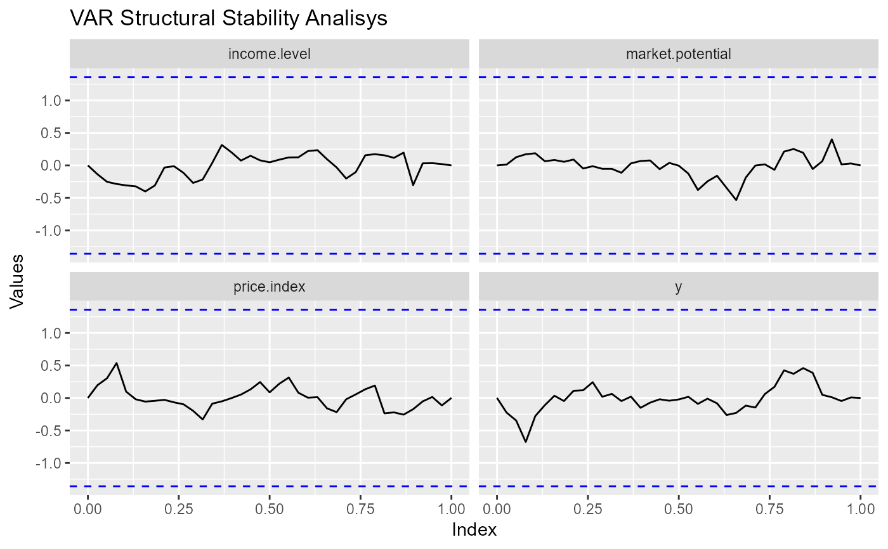

Arguments
- x
A "varest" object to pass to stability, or, directly, a "varstabil" object.
- series
A character vector with series (variables) to consider. Defaults to all (
NULL).- ci
The confidence level for the confidence interval. Set to
FALSEto omit. Used in boundary.- args_line, args_hline
Additional arguments passed to geom_line and geom_hline (respectively). See more in the 'Customization' section.
- args_labs
Additional arguments passed to labs. If an empty list, will be changed to default values.
- args_facet
Additional arguments passed to the faceting engine used.
- ...
Arguments passed to methods, see the 'Methods' section.
Value
A ggplot.
Details
Customization
The graph can be customized both with the 'static' arguments passed to each layer – using the args_* arguments –, and, if applicable, the 'dynamic' aesthetics – using the args_aes argument.
After built, the result can be further customized as any ggplot, adding or overwriting layers with the ggplot's +. It is useful to understand the data and the mappings coded by the package, using the function get_gg_info.
See vignette('customizing-graphs') for more details.
Methods
The data from x is extracted with the generic function mtsdesc:::stability_setup. Each class conditions an external function to pass the ... arguments to. Below there is a list with all the currently implemented classes:
Class
'varest': passed to vars::stability.Class
'varstabil': passed to nothing.
See also
Other model diagnostics plots:
ggvar_acf(),
ggvar_dispersion(),
ggvar_distribution(),
ggvar_history(),
ggvar_select()
Examples
ggvar_stability(vars::VAR(freeny[-2]))
